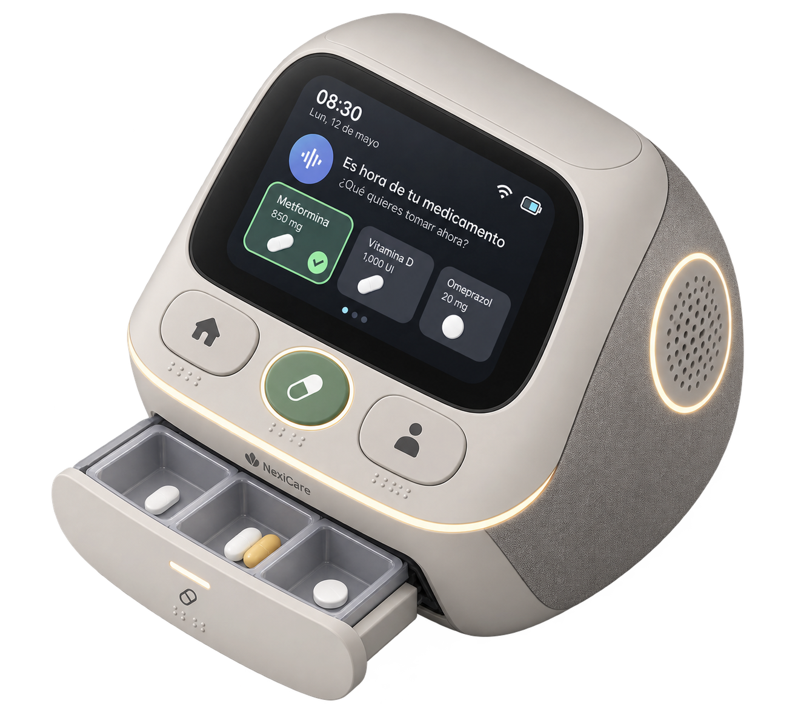

Soluciones fragmentadas
Existen dispensadores, recordatorios, aplicaciones y tecnologías de asistencia, pero suelen concentrarse en una función o canal de interacción.
Diseño especulativo · 2040
Un sistema inteligente de abastecimiento y dispensación de medicamentos pensado para favorecer una gestión más segura, accesible y autónoma.
Proyecto conceptual. No representa un producto comercial ni una tecnología actualmente validada.
Coloca el archivo
object.glb
en
assets/models/
para activar el visor interactivo.

01 / Premisa
NexiCare imagina un escenario en el que la accesibilidad deja de depender de un único canal de comunicación y pasa a formar parte del propio objeto.
El envejecimiento poblacional, la búsqueda de mayor autonomía y la integración de tecnologías asistivas en el hogar pueden transformar la manera en que las personas gestionan tareas cotidianas relacionadas con su salud.
En este escenario, un producto doméstico puede asumir funciones de organización, aviso y confirmación sin convertir la experiencia en una interfaz compleja.
Existen dispensadores, recordatorios, aplicaciones y tecnologías de asistencia, pero suelen concentrarse en una función o canal de interacción.
NexiCare explora la posibilidad de integrar comunicación visual, táctil y auditiva dentro de una experiencia doméstica coherente.
La existencia de estas categorías tecnológicas no implica que NexiCare o sus combinaciones específicas estén actualmente disponibles.
04 / El objeto
NexiCare
NexiCare organiza y dispensa automáticamente dosis programadas. Su interacción combina pantalla de alto contraste, Braille, señales luminosas, vibración y audio para comunicar cuándo y qué medicamento debe tomarse.
Se establece el calendario de dosis.
El sistema reconoce la dosis programada.
Entrega la dosis correspondiente.
Combina canales visuales, táctiles y auditivos.
La interacción busca cerrar el ciclo de la toma.
Render de NexiCare en uso.
06 / Interacción
La propuesta no depende de un único sentido. La información puede aparecer mediante contraste visual, lectura táctil, luz, vibración o audio, buscando que la persona tenga más de una vía para reconocer el evento.
Si cuentas con una vista explotada, colócala aquí.
Pantalla de alto contraste
Interfaz Braille
Señalización luminosa
Salida / dispensación
Interfaz de audio y vibración
Otros componentes: únicamente cuando estén definidos por el concepto.
Las funciones anteriores describen el concepto. No deben interpretarse como una especificación técnica validada.
08 / Línea temporal
Dispensadores, recordatorios, aplicaciones y ayudas de accesibilidad.
Mayor integración entre hogar inteligente, interfaces adaptativas y asistencia.
Una propuesta especulativa que reúne estas posibilidades en un objeto.
09 / Galería
11 / Realidad aumentada
Explora su escala y presencia física mediante realidad aumentada. En iPhone y iPad se utilizará Apple Quick Look; en dispositivos Android compatibles se utilizará Google Scene Viewer.
Preparando experiencia de realidad aumentada…
12 / Escenario 2040
El proyecto explora qué podría suceder si la gestión de medicamentos se diseña desde el inicio alrededor de diferentes capacidades sensoriales y de la búsqueda de mayor autonomía en el hogar.
2040